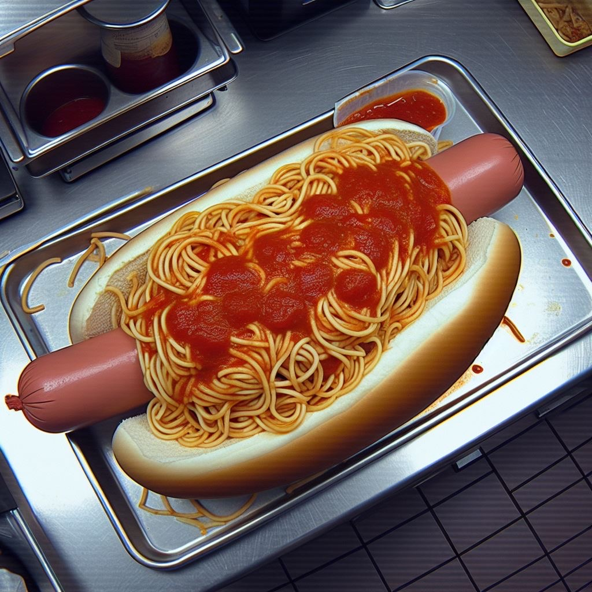

Spaghetti Hotdog

Chicks Dig A Man With A Weiner and Meatballs
Everyone's got a history textbook in their house. Pop it open and you'll see that back hundreds of years ago, kings around the world were eating this astounding dish. Today, I reveal to you the secret that makes the magic.
Ingredients
- 4 hotdog buns (because you can't just eat one)
- 4 cooked hotdogs (or however many you can handle...)
- 1 can of tomato sauce (because who has time for homemade when you're this daring)
- 1 sliced jalapeño pepper (this recipe can use a little confusion)
- 1 cup shredded blue cheese (fancy)
Instructions
- Begin by cooking your hotdogs until they're nice and plump. This is crucial; they'll be the sturdy base for your spaghetti masterpiece.
- Heat up your canned spaghetti in a saucepan. Don't forget to stir occasionally, or it might start plotting against you.
- Once your spaghetti is warm and slightly menacing, place a generous amount on top of each hotdog. Don't worry about being neat; spaghetti is notorious for its rebellious nature.
- Sprinkle shredded blue cheesd on top of the spaghetti-covered hotdogs. This step is essential for achieving that "I can't believe I'm eating this, but it's strangely satisfying" taste.
- Serve your Spaghetti Hotdog creation to others or dog them out yourself... I know you can!